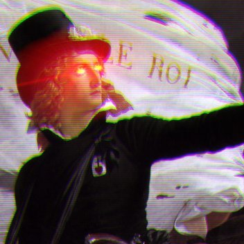
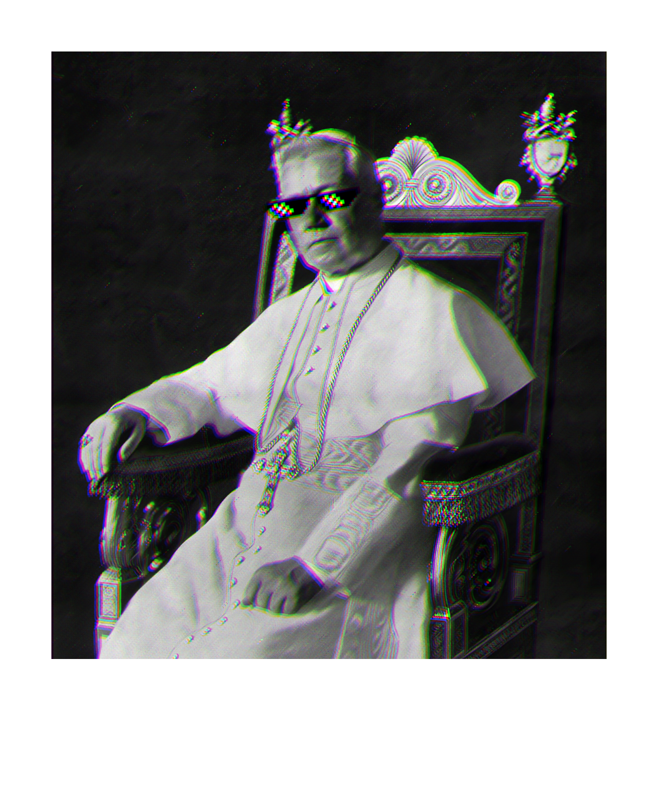
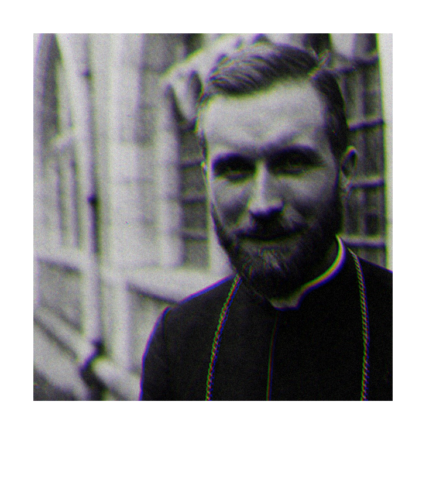
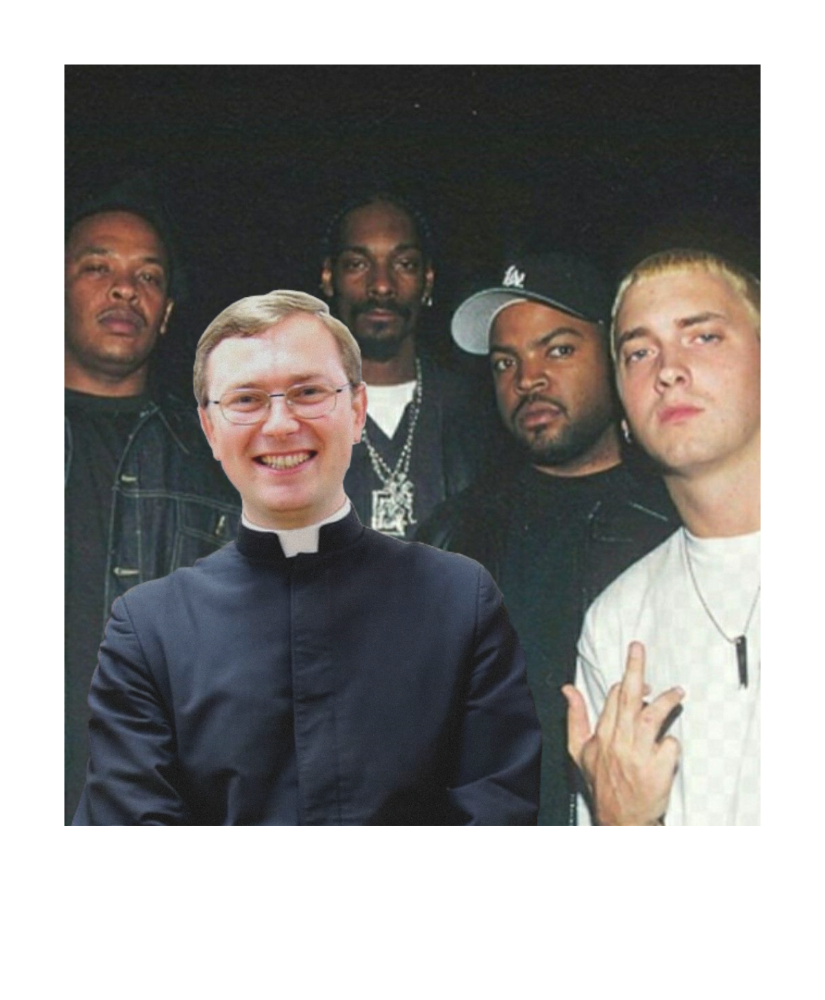

Szuria bez kompromisu
Prawicowa szuria w Twojej piwnicy!
„Być reakcjonistą to zrozumieć, iż prawdy nie wolno wyrzec się tylko z tego powodu, że nie ma ona możliwości zatriumfować.” — Nicolás Gómez Dávila

Prawicowa szuria w Twojej piwnicy!
„Być reakcjonistą to zrozumieć, iż prawdy nie wolno wyrzec się tylko z tego powodu, że nie ma ona możliwości zatriumfować.” — Nicolás Gómez Dávila


